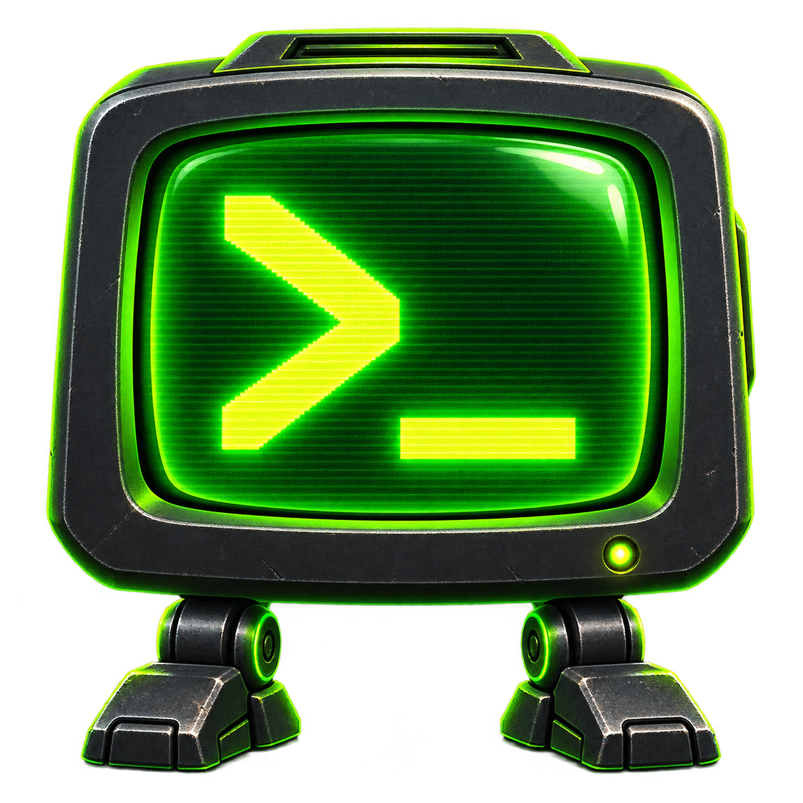
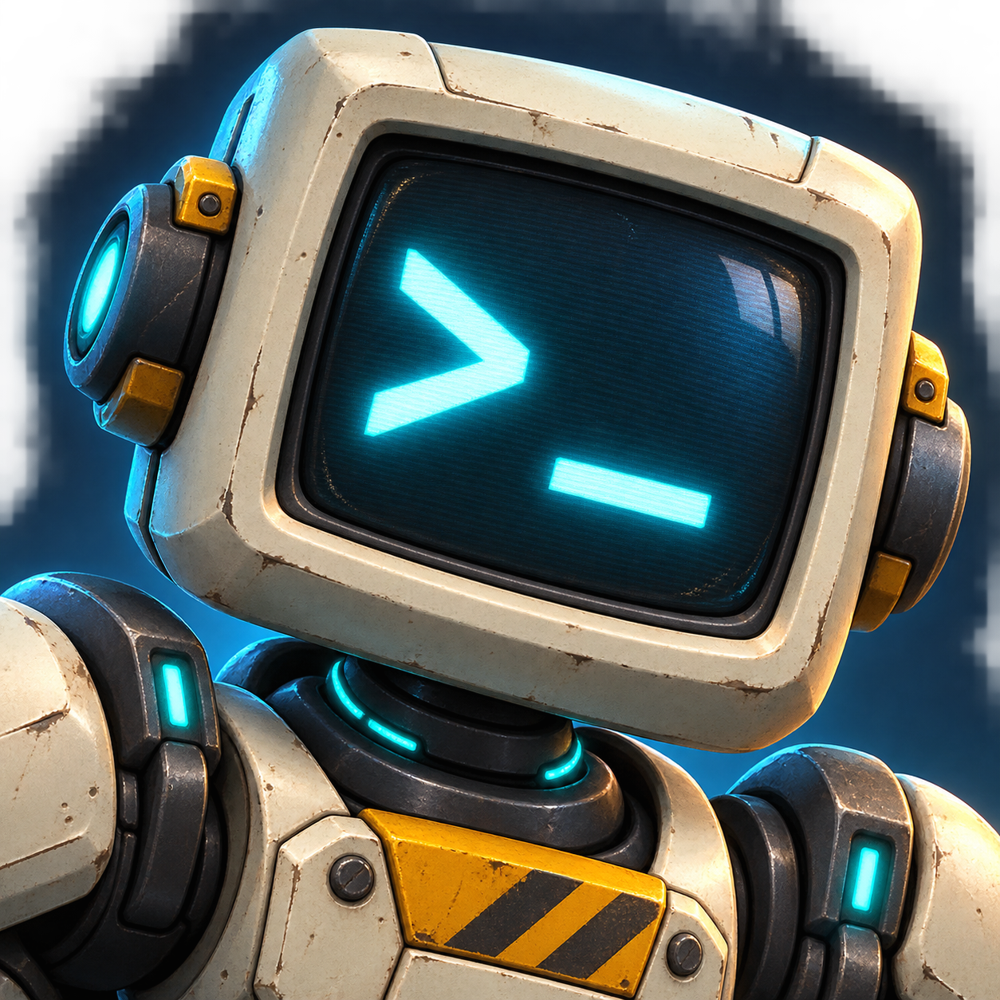
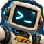
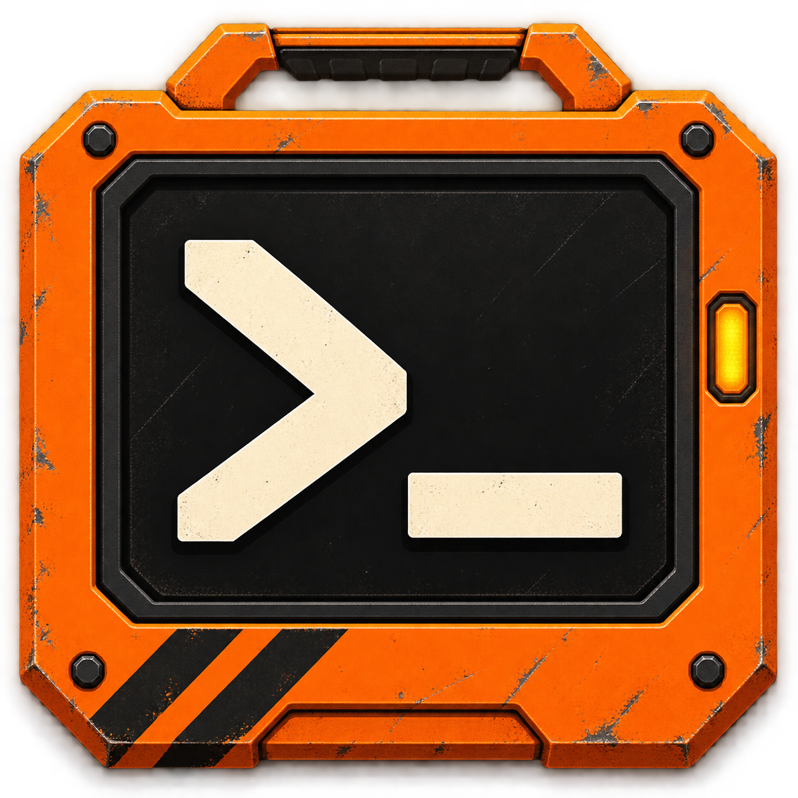
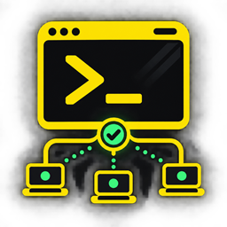

A · Phosphor Terminal
Classic console recognition. A bright green prompt with a little salvaged-machine character.
64 px thumbnail
Three directions for the Thunderstore listing. B · Console Companion is the selected logo.

Classic console recognition. A bright green prompt with a little salvaged-machine character.

A memorable mascot. The most expressive option for building a broader visual identity.

Approved 64 px thumbnail
Bold orange, clear purpose. A strong simple silhouette in a busy mod-manager grid.

Current logoShown at 64 px for comparison.
The selected mascot uses the original B artwork, resized for the package icon.